Scrapyard Skirmish is a 4-player, team-based, strategy game for tablet devices. Team members must work together to place their units on the board in a strategic manner to raid their opponents' scrap pile while also defending their own. They then ready up and watch the battle commence.
Development for Scrapyard Skirmish started in September of 2017 and took place over a seven month period by a team of 13 people. It was then presented to the public at the annual Fuse show at the Peoria Riverfront Museum in April. I came onto the project in January of 2018 assigned to network programming with no prior experience. I immediately started researching the best route for us. I then quickly learned how to use a MySQL database along with PHP to interface with the C# in Unity. We used this to send back and forth unit placement information along with readying up information.
Scripts I Worked On
